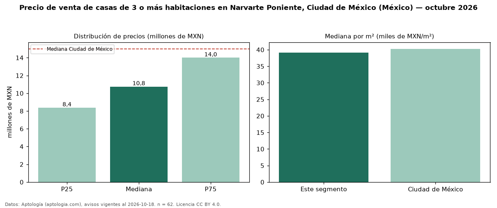

Precio de venta de casas de 3 o más habitaciones en Narvarte Poniente, Ciudad de México (México) — octubre 2026
Con 62 avisos vigentes, el precio mediano de casas de 3 o más habitaciones en venta en Narvarte Poniente, Ciudad de México (México) es MXN 10,75 millones. Eso es 28 % por debajo de la mediana de Ciudad de México para casas de 3 o más habitaciones (MXN 15 millones). Por metro cuadrado, la mediana es MXN 39.087/m² (n = 58 avisos con área), 3 % por debajo de Ciudad de México (MXN 40.268/m²). Son 82 % de los 76 avisos de casas en venta de la zona, cuya mediana general es MXN 10,32 millones (+4 %). El área mediana anunciada es 290 m². La mitad central de los avisos va de MXN 8,38 millones a MXN 14 millones (razón 1,7), una dispersión moderada. Datos: Aptología (aptologia.com), CC BY 4.0 — https://www.aptologia.com/. Archivos: PDF, CSV con las cifras y gráfica PNG.

| Avisos únicos | 62 |
|---|---|
| Percentil 25 | COP 8.375.000 |
| Mediana | COP 10.750.000 |
| Percentil 75 | COP 14.000.000 |
| Mediana por m² | COP 39.087 |
Fuente: avisos vigentes de portales inmobiliarios recopilados por Aptología, deduplicados (mínimo 30 avisos únicos por celda). Precios pedidos, no cerrados. Fecha: 2026-10-18.